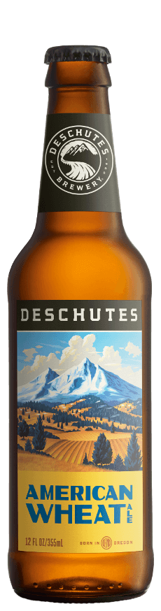
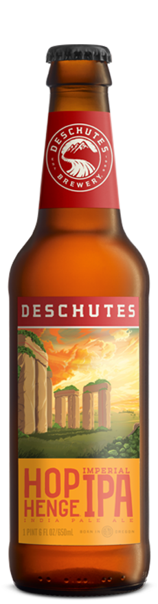
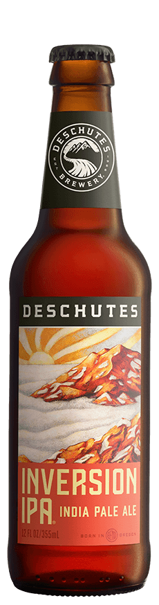
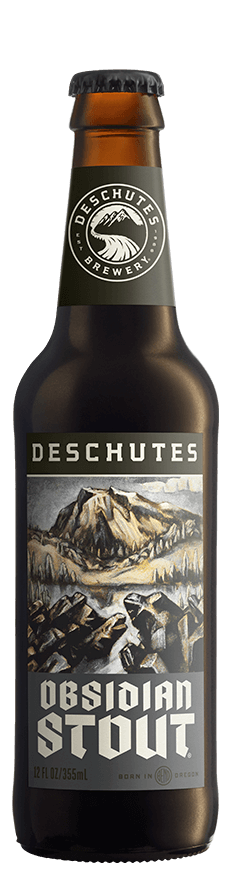
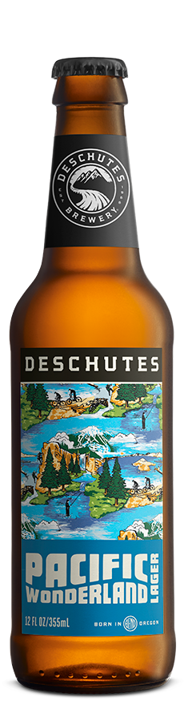
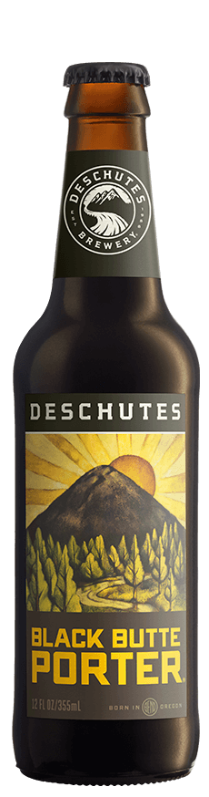
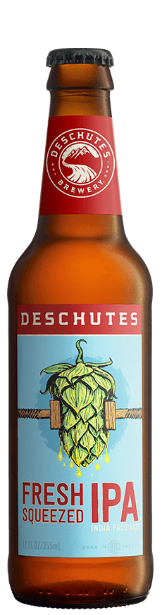
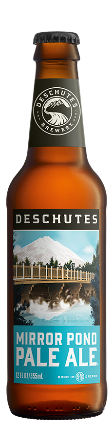

YEAR ROUND
SEASONALS
JUST TAPPED SERIES
DRAFT ONLY
RESERVE SERIES
COLLABORATIONS
These are the core beers we make at Deschutes. Extra time, craft and passion are the common
denominator in these varied, full-flavored, excursions outside the brewing mainstream.







